KELIR Development Corner hadir di Yogyakarta & Jawa Tengah. Kami menghentikan badai turnover dan produktivitas mandek dengan intervensi psikologis dari akarnya. Bukan sekadar motivasi sesaat.
Selamatkan Perusahaan Saya Sekarang!Jangan biarkan operasional mandek hanya karena stres finansial akibat UMR atau tekanan target pabrik yang gila-gilaan. Konflik antar divisi dan karyawan burnout adalah bom waktu.
Jika HRD Anda masih memakai cara tradisional yang kaku, bersiaplah menghadapi turnover tinggi. Anda butuh pendekatan andragogi dan experiential learning yang menyentuh alam bawah sadar mereka secara langsung.
Tim KELIR dc diisi oleh Master Trainer tersertifikasi BNSP Level 6, Instruktur Hipnoterapi, dan ahli Art Therapy. Kami menangani krisis korporat dengan standar kerahasiaan tinggi (trauma-informed).
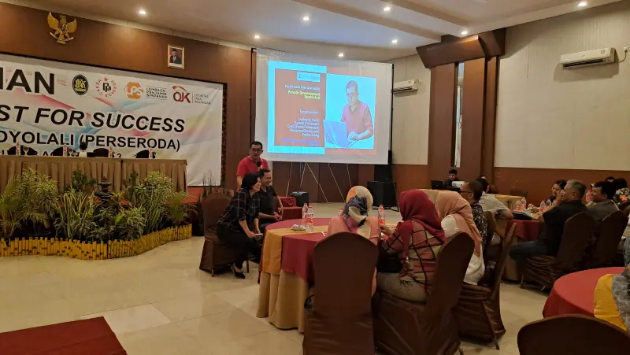
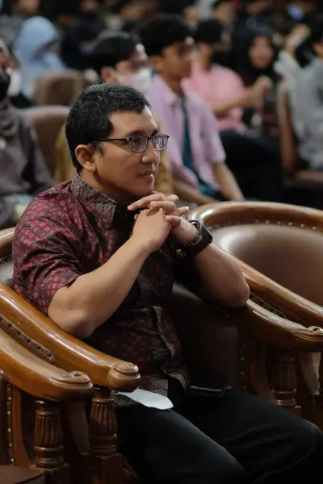
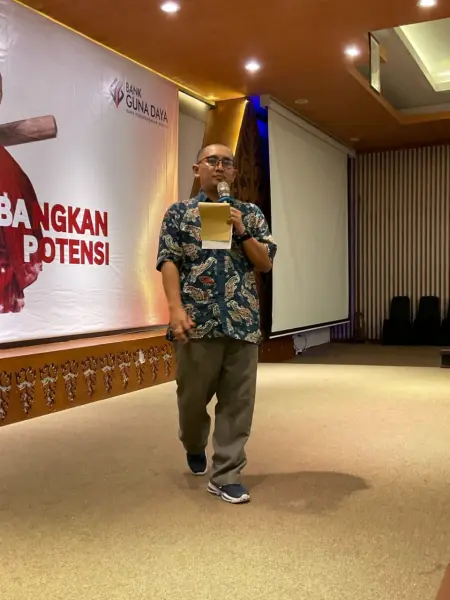
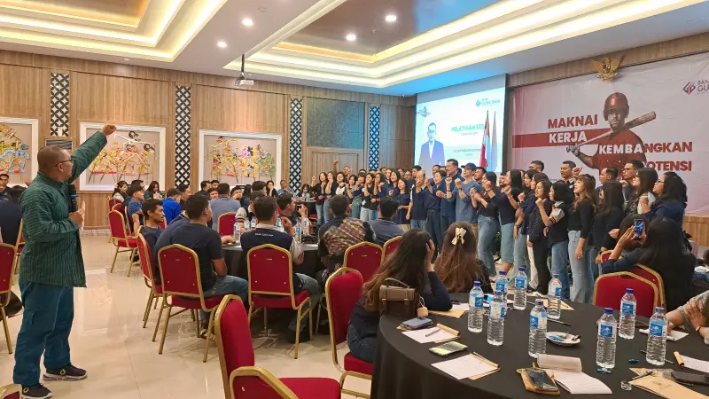
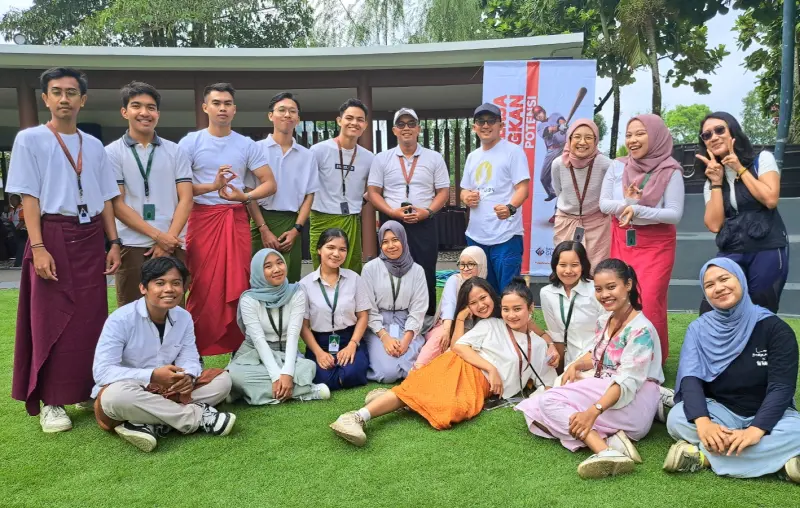
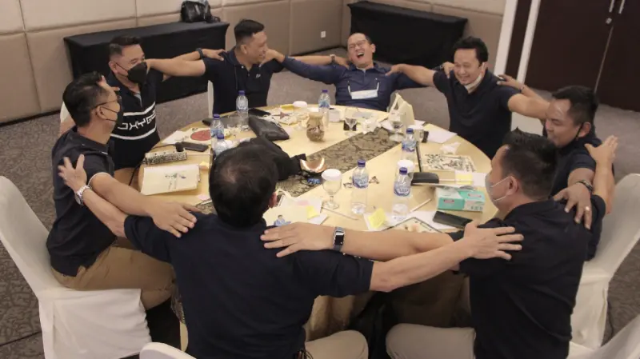
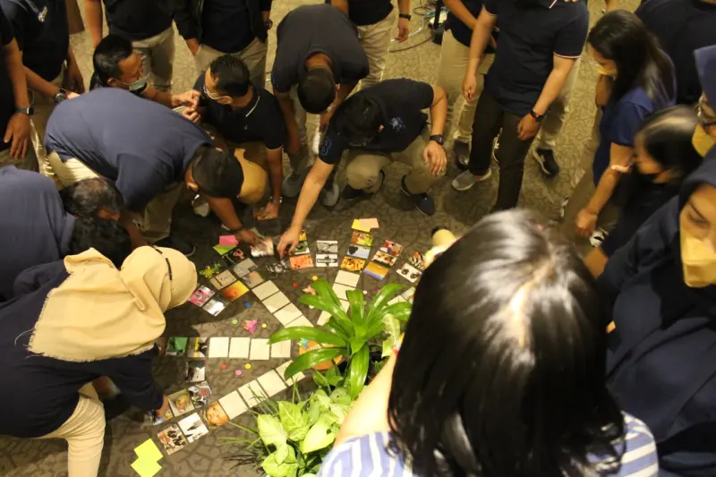
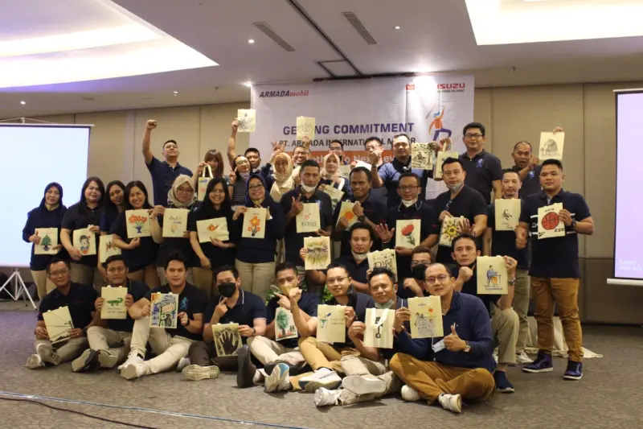
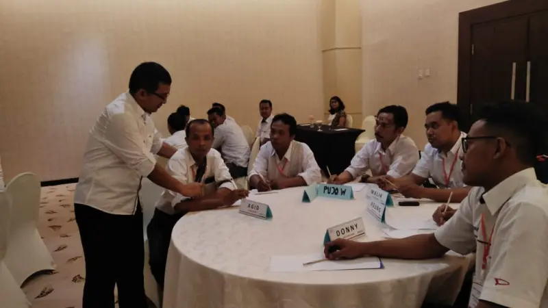
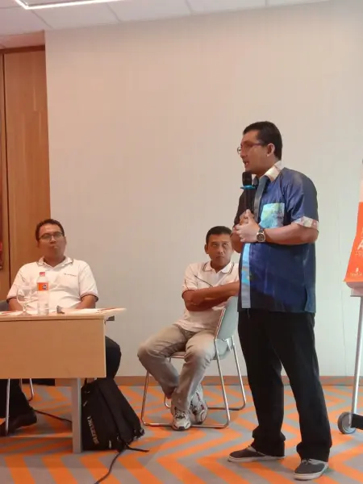
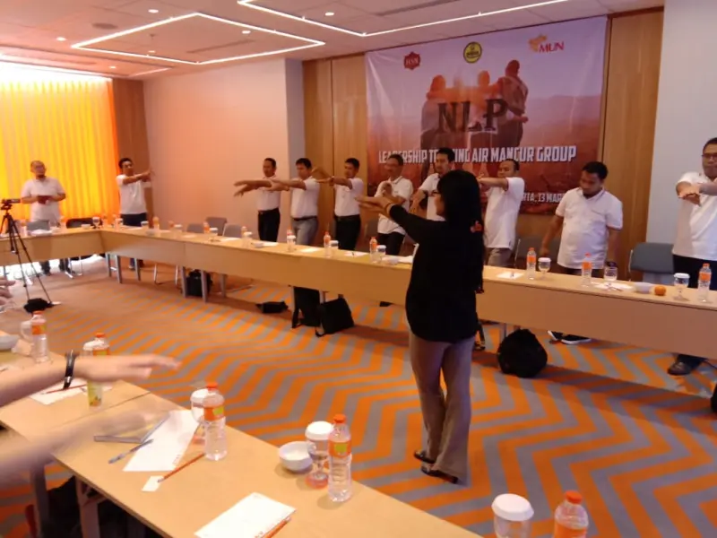
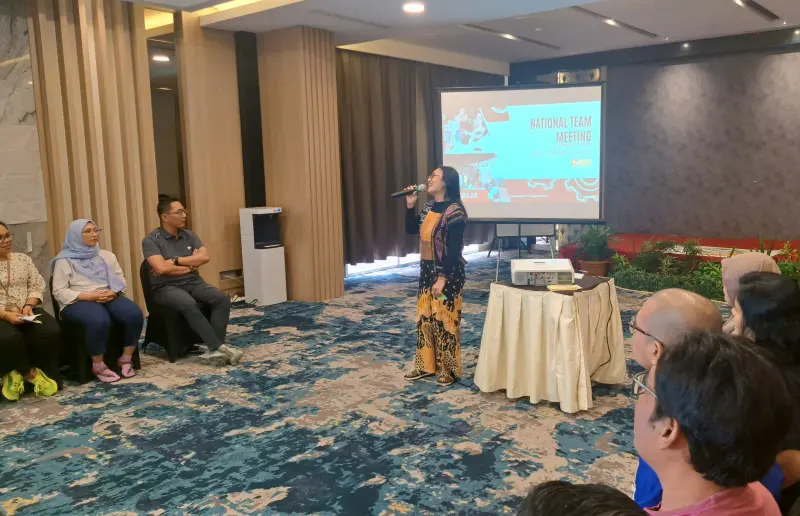
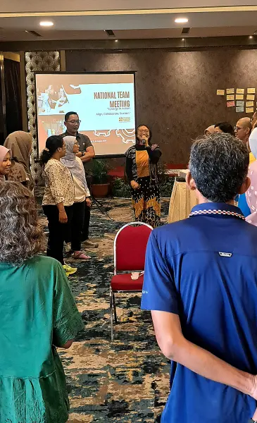
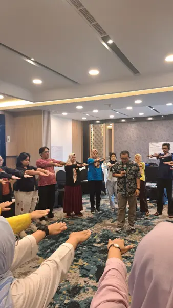
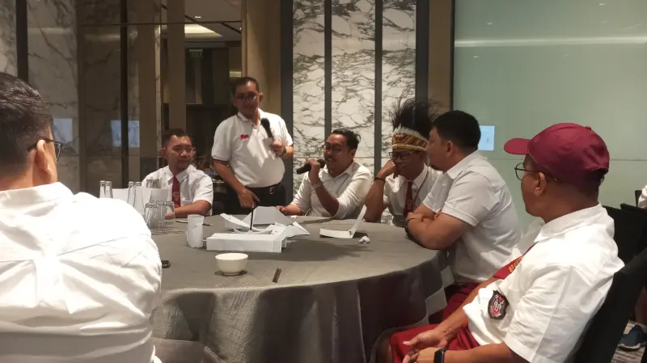
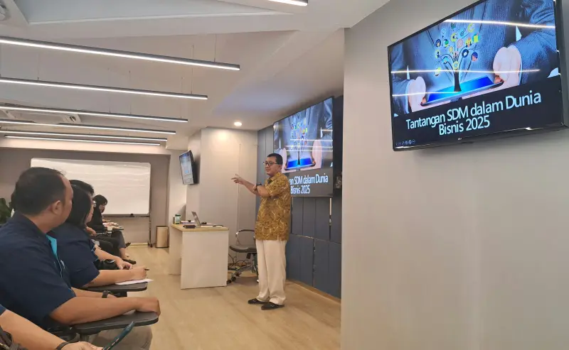
Bukti otentik transformasi ribuan SDM di berbagai institusi bersama KELIR dc.
Solusi komprehensif atasi burnout, stres kerja, dan konflik internal yang menghancurkan produktivitas tim Anda.
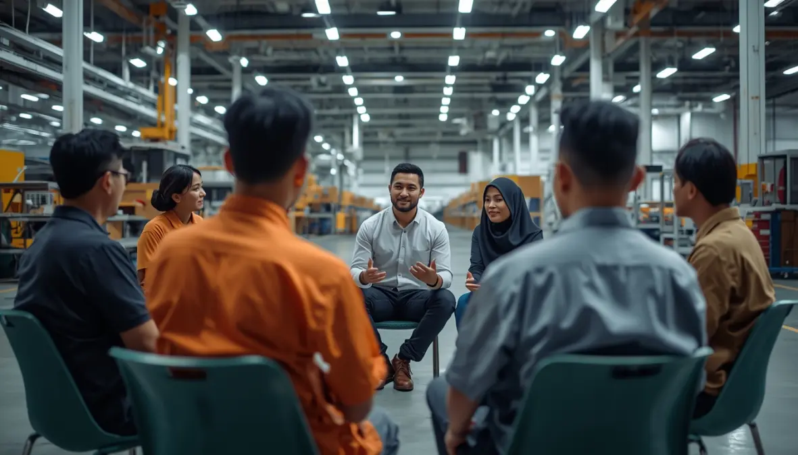
Intervensi psikologis untuk menjaga stabilitas emosi dan produktivitas buruh/karyawan pabrik skala besar.
Sertifikasi dan peningkatan skill strategis HRD di Sleman untuk mengelola SDM modern secara efektif.
Kuasai teknik komunikasi dan closing bawah sadar yang ampuh untuk tim Sales/Marketing di Solo.
Terapi psikosomatis dan pendampingan mental pasca-PHK massal atau krisis operasional di Magelang.
Bangun SOP, KPI, dan struktur organisasi yang kokoh untuk bisnis menengah yang sedang berkembang di Bantul.
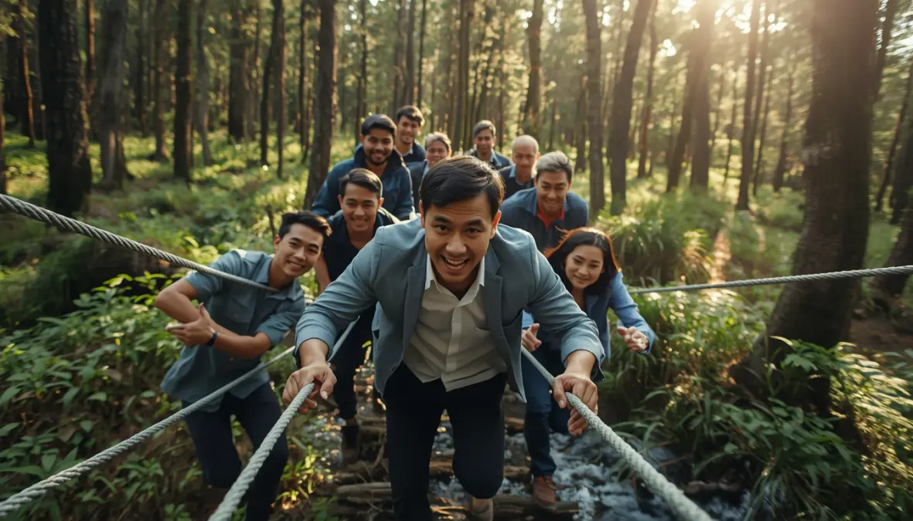
Cetak jajaran manajer tangguh, visioner, dan kebal krisis untuk memimpin korporasi se-Jawa Tengah.
Penundaan hanya akan memperparah "kanker" psikologis di dalam perusahaan Anda. Investasi pada manusia adalah investasi terbaik untuk masa depan organisasi.
Jadwalkan asesmen awal bersama tim ahli KELIR dc hari ini. Kami siap meluncur ke fasilitas Anda di seluruh DIY & Jawa Tengah.
Apakah lembaga pengembangan SDM ini bisa dipanggil ke Jawa Tengah?
Tentu, jasa konsultan KELIR dc siap membantu dan memberikan intervensi secara langsung di area Jogja (Sleman, Bantul) hingga kota-kota besar di Jawa Tengah seperti Semarang, Solo, dan Magelang.
Siapa yang menangani sesi terapi dan pelatihan korporat?
Semua pelatihan kecerdasan emosional dan layanan biro psikologi kami ditangani langsung oleh praktisi tersertifikasi BNSP (Badan Nasional Sertifikasi Profesi) untuk memastikan mutu spesialis tertinggi. Intervensi krisis akan didampingi oleh Master Trainer Level 6, Instruktur Hipnoterapi, serta praktisi Art Therapy yang menjunjung tinggi kode etik kerahasiaan.